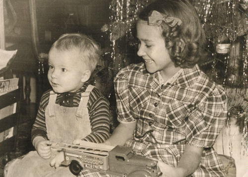

| Bob's Story | |
 |
Photo: Bob and his sister, Barbara, Christmas 1940. I was born December 26, 1938 at Sutter Hospital in Sacramento, California. The house I grew up in, a few miles northeast of Sacramento, had been built by my Dad with his own hands. My Mom and Dad lived in that house for their entire married lives until my Dad passed away, after more than 50 years of marriage. As a house, it was somewhat small and plain; but as a home, it was rich with the things that really matter – love, stability, laughter, spiritual guidance. |
|
Some of my earliest childhood memories are from events in the original little building of the Nazarene Church in North Sacramento, California. I like to say that I began attending church there prenatally. My mother had become a Christian as a girl, and my father was saved in that church a few years before I was born. One occasion that stands out clearly in my mind is when, at the age of about five, I stood at the front of the church on a Sunday morning and recited the Beatitudes from the fifth chapter of Matthew. My parents had helped and encouraged me to memorize that passage of scripture, and I am very thankful that they saw the importance of planting God's Word in my mind. Also, that was perhaps the first time in my life that I began to see that church is a place to be involved - to do worthwhile things, not just be there. Around that same time, one of those "insignificant" moments occurred that somehow get stuck in the memory and become a sort of reference point. I was seated near one of my little friends while communion was being served, and it was probably one of the first times that our parents had allowed us to take communion. After the bread was passed, he leaned over to me and whispered "I was so hungry I took two." Without realizing it at the time, he was expressing a profound spiritual principle. Thinking again of the fifth chapter of Matthew, and specifically verse six: "Blessed are those who hunger and thirst for righteousness, for they will be filled." Apparently the Lord forgave his transgression of taking two pieces of communion bread - he grew up to become a successful Nazarene pastor.
In the North Sacramento Nazarene Church, at the age of nine, I realized that I needed to make a commitment to God; and I asked Jesus to be my Saviour. Through all the ups and downs of life, that commitment has stayed with me. When I was about twelve years old, my parents and several other families felt led by the Lord to begin a new church in a growing area a few miles outside of town. They located a piece of property on Arden Way, and the Sacramento Arden Church of the Nazarene began to form. In the beginning, the property was a large open field overgrown with weeds, with a small cement block building in the middle. As I recall, the building had openings for doors and windows, but none were in place. The most recent residents of the building had been some horses and probably some wild creatures as well. Needless to say, quite a bit of work had to be done before the building could be used for church meetings. As those few families started working together, there soon developed a spirit of adventure, cooperation, and love that was very special. As a teenager during those years, with all of the usual teenage struggles and doubts, the atmosphere at church was a great help to me. I will always have a great respect for the leaders of the church who were such a good influence on me during that time. From its small beginnings in the horse stable, the church grew steadily and went through several phases of building expansion. In the meantime, the City of Sacramento expanded and filled in all of the open fields around the church. The Arden Church is still a good strong church in that part of Sacramento, and I'm glad I was there to see it all begin. After graduating from high school, I left home for the first time to attend Pasadena College in Pasadena, California (now Point Loma Nazarene University in San Diego). Needless to say, this started some big changes in my life. I got good grades all through elementary school and high school, but the increased level of competition at the college level was somewhat of a shock. Living in a college dormitory with guys my age was a lot of fun – maybe too much fun, with the constant temptation to be doing things other than the studying that I needed to do. Somehow, I managed to get good enough grades to make it through. There were a lot of interesting girls there too. One girl in particular really caught my attention. Her name was Mary Barton, and she was so cute! I didn’t have much confidence around girls and didn’t know if there was a chance she might be interested in me. But I felt like I had to try, and that’s the start of another story….. |
|